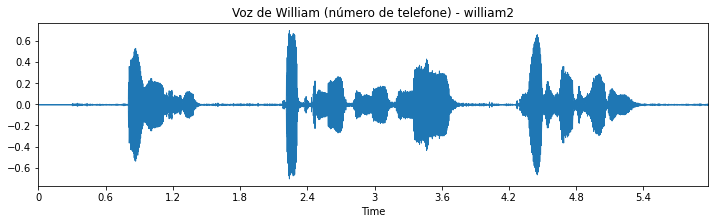
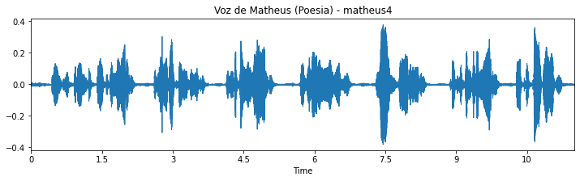
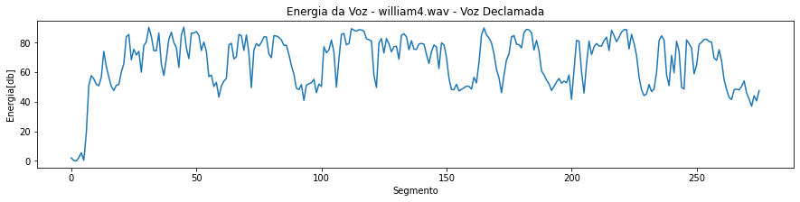

Laboratório 6:
PDS Voz
Neste laboratório, a equipe utilizou um conjunto de áudios gravados para realizar análises de processamento digital de sinais em espectros de voz. Ao fim da página, é disponibilizado o Jupyter Notebook utilizado para a realização deste experimento.
1. Gravação dos arquivos de áudio
Inicialmente foi realizada a captura de áudio utilizando o software Audacity, por cada um dos integrantes do grupo. Para que fosse manter um padrão que permitisse a posterior comparação dos resultados, foi definido um script com o que seria gravado em cada uma das quatro categorias, de modo que os 3 membros da equipe gravaram os áudios com o mesmo conteúdo. Essas foram as gravações:
- Dígitos: dígitos de 0 a 9, pronunciados separada e pausadamente
- Número de telefone: número de telefone no formato (11) XXXX-XXXX.
- Texto lido: Trecho retirado do projeto pedagógico do curso de Engenharia de Informação da UFABC: “O Engenheiro de Informação é o profissional com sólido conhecimento científico e tecnológico para atuar no projeto, análise, desenvolvimento ou implantação de serviços ou sistemas responsáveis pela geração, processamento, transmissão, recepção, apresentação, armazenamento e segurança da informação através dos diferentes tipos de redes de comunicação globais.”
- Poesia declamada: recitação dos versos da canção Vambora (Adriana Calcanhoto) em forma de poesia:
“Entre por essa porta agora
E diga que me adora
Você tem meia hora
Pra mudar a minha vida
Vem, vambora
Que o que você demora
É o que o tempo leva”
2. Leitura dos arquivos e janelamento
Nessa etapa os arquivos gravados foram importados como vetores utilizando a biblioteca Librosa, bem como sua respectiva taxa de amostragem. A seguir são apresentados os plots dos sinais de áudio no tempo para cada uma das gravações.


Conforme é possível observar, apesar de não serem idênticos entre si, é possível verificar uma significativa correlação entre os gráficos de uma mesma gravação feita por diferentes integrantes. Há expansões e contrações no domínio do tempo, associadas à velocidade que cada locutor pronunciou seu script, e também na amplitude, tendo em vista o fato de os ambientes serem diferentes, e, portanto, possuindo diferentes características acústicas, especialmente ruído de fundo, bem como à qualidade dos microfones utilizados para captura.
Na sequência, foi plotada a Janela de Hamming, conforme apresentada na figura a seguir.

3. Energia de Tempo Curto
Nesta etapa, deu-se início às análises nos sinais de áudio, a partir de uma perspectiva mais voltada para processamento digital de sinais. Inicialmente foi determinado o contorno de energia para 3 grupos dos áudios capturados (dígitos, voz falada e poema), as quais são apresentadas em função dos segmentos, conforme apresentado nas figuras a seguir.


Analisando os gráficos de energia, é possível verificar que também há uma correlação entre as gravações dos 3 membros do grupo, entretanto, nas gravações realizadas pelo Dimitri e Matheus é possível observar que a energia ao longo dos segmentos está bem distribuída entre aproximadamente 0 e 40 dB, enquanto nas gravações do William, é de 0 dB no início e, ao longo dos segmentos, se distribui entre 40 e 80 dB. Essas características podem estar associadas ao fato de as gravações realizadas pelo William possuírem um pequeno delay antes de iniciar de fato, bem como ele ter sido o único que utilizou o microfone de u headset (os demais membros utilizaram o microfone integrado do notebook).
4. Espectrogramas
Nesta etapa, foram gerados e analisados os espectrogramas gerados a partir dos sinais gravados, novamente para os dígitos, voz falada e poema declamado. Os resultados são apresentados a seguir.

Visualizando os espectrogramas, é possível identificar claramente os momentos de fala e de silêncio, especialmente nas gravações dos dígitos e do poema, tendo em vista que há pausas mais bem definidas – entre os números e versos, respectivamente – que permitem, inclusive, associar cada feixe vertical a seu respectivo número ou verso, correspondentes aos segmentos de maior intensidade ao longo do tempo. Além disso, também é possível verificar que os espectrogramas obtidos do Dimitri não são tão nítidos quanto aos do Matheus e do William. Isso se deve ao fato do seu microfone inserir ruído branco em todo o espectro do sinal capturado, algo que pode ser constatado empiricamente ao ouvir os áudios gravados.
5. Pitch e F0.
Nesta etapa foi obtido o período de pitch dos sinais por meio da análise entre os picos sucessivos da função de autocorrelação dos sinais, conforme pode ser observado a seguir. Os picos estão indicados com “x” em laranja.
Já os quatro primeiros formantes foram obtidos empiricamente a partir dos quatro picos consecutivos dos espectros das vogais /é/ de <zero>, /in/ de <informação> e /en/ de <entre>, conforme apresentados nas figuras a seguir, destacados em vermelho.
As tabelas a seguir reúnem os dados obtidos graficamente.


6. Determinação de Consoantes e Plosivos.
A partir dos espectrogramas de um trecho das gravações dos dígitos, mais especificamente entre as falas “zero” e “cinco”, foram identificadas as consoantes surda /s/, surda plosiva /t/ e sonora /m/, conforme apresentado nas figuras apresentadas adiante, nas seguintes posições:
zero u<m> doi<s> três qua<t>ro cinco seis sete oito nove
Comentários e Conclusões
[...]
Anexo: Jupyter Notebook
Abaixo, exibe-se o Jupyter elaborado pela equipe. Caso tenha problemas para carregá-lo, clique aqui.